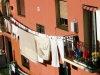
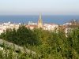
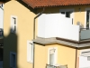

Сан Себастиян San Sebastian
На стария сайт този албум имаше 72 снимки. Възстановени са 21 миниатюри — пълните файлове не са запазени в архива.
The old site listed 72 photographs in this album. 21 thumbnails survived; the full-size files did not.



